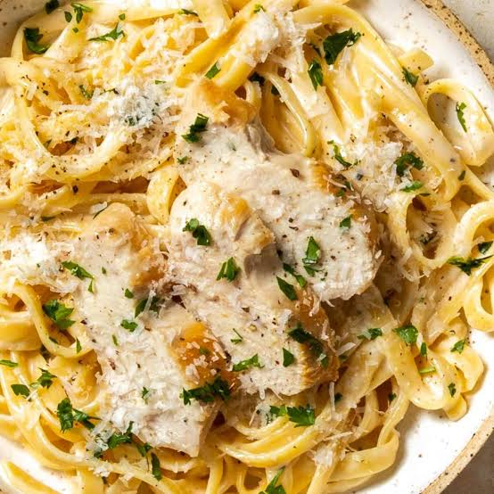

Preparation: 10 minutes · Cooking: 20 minutes · Serves: 2–4
Ingredients
- 400g pasta (Fettuccine or Penne)
- 2 cooked chicken breasts (sliced)
- 1.5 cups cooking cream
- 1/2 cup grated Parmesan cheese
- 1 tablespoon butter, garlic, salt, and pepper
Instructions
- Boil the pasta in salted water, then drain.
- Melt butter and garlic in a pan, add cooking cream and Parmesan cheese, and stir until smooth.
- Add the cooked pasta and slice add chicken into the sauce, mix well, and serve hot!
A delicious and rich classic Italian pasta dish made with tender chicken and a creamy Parmesan sauce.